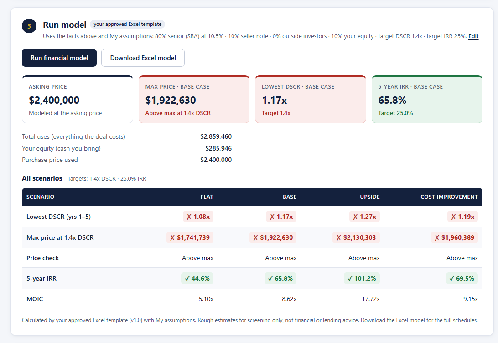
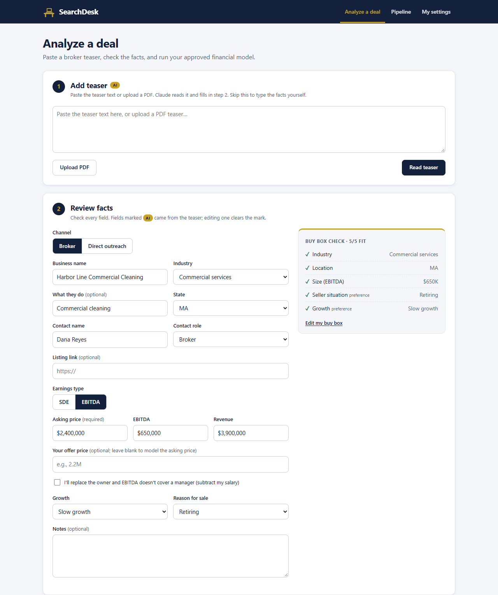
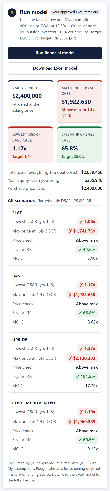
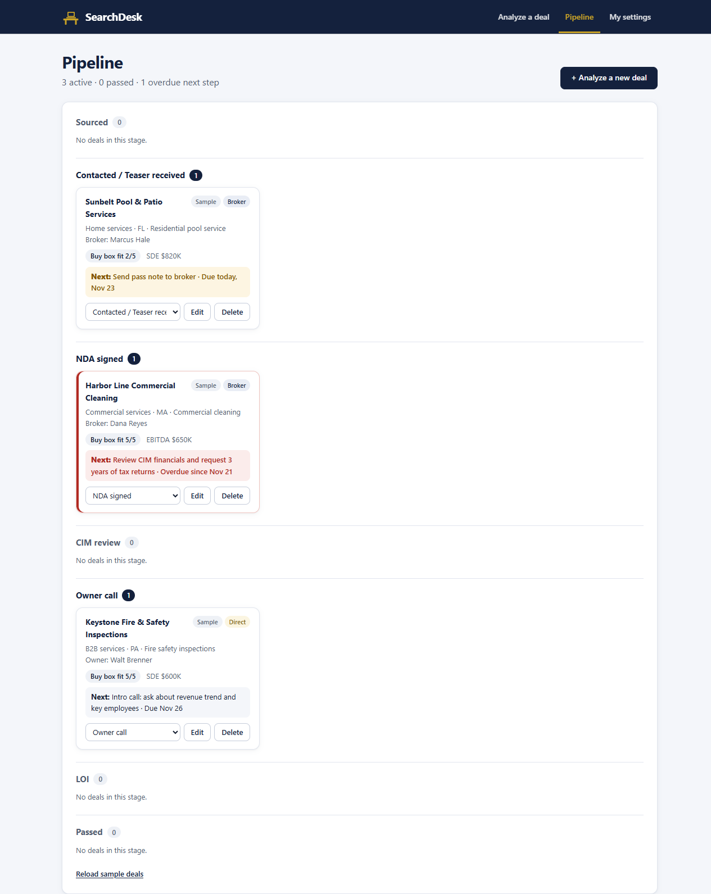
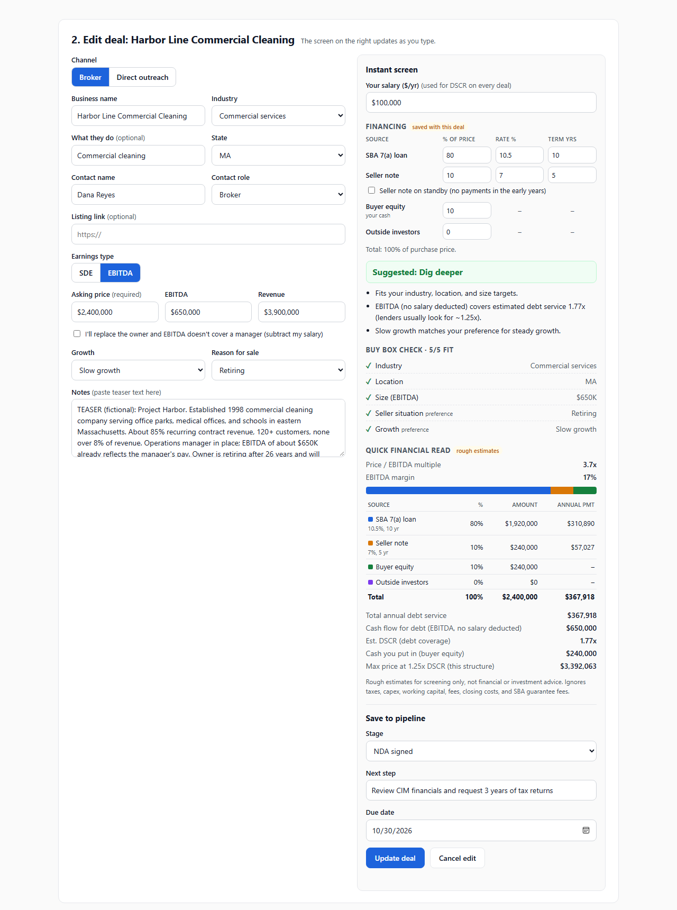

SearchDesk
SearchDesk turns a broker teaser into a lender-ready acquisition model in minutes, so first-time searchers can quickly tell whether a deal is affordable, financeable, and worth pursuing.
Product Showcase (Prototype / Live App / 2-Min Video)
Current Status: Build 3: live app with my approved financial model.
Live app: searchdesk.onrender.com (Render free tier: after 15 idle minutes it sleeps, so the first load can take ~30–60 seconds). Screenshots below use fictional deals.








Living PRD (Product Requirements Document)
1. Target User & The Job to Be Done
Who is this for? First-time ETA searchers screening broker teasers, starting with me (Jordan), a first-time searcher at NYU Stern. Evidence: a lender (Northwest Bank) told me they typically want a DSCR around 1.40x, above the SBA minimum, so knowing the maximum price a deal can support matters before making an offer; my professor's feedback was that the financial model and PDF teaser reading are the product's strongest parts.
The painful "Before" workflow: Every teaser means rebuilding an acquisition model in Excel: typing in the numbers, setting up sources & uses, a debt schedule, and projections. It takes hours per deal, so most teasers get a gut-check instead of real analysis, and it's hard to tell whether the asking price will clear a lender's DSCR requirement.
The "After" workflow with this product: Paste a teaser or upload the PDF. SearchDesk extracts the deal facts, runs them through my approved Excel model with my own financing assumptions, and shows 4 scenarios, the maximum price at my target DSCR, and equity returns. Then I download the filled Excel model to keep adjusting.
2. Scope & Explicit Non-Goals
Product focus (PRD v3): Narrowed to one job done well: paste a broker teaser or PDF → AI extracts the deal facts → my approved Excel acquisition model calculates sources & uses, debt schedule, 4 scenarios, max price at target DSCR, and equity returns → download the filled Excel model to keep adjusting. (Professor's advice: avoid scope creep.)
- In Scope (Core Workflow): Set my assumptions once (financing, costs, target DSCR and return) → paste a teaser or upload a PDF → review the AI-extracted facts → run the model → see scenarios, max price, and returns → download the Excel model.
- Out of Scope #1: Not a CRM or deal tracker. The simple pipeline stays but won't be expanded.
- Out of Scope #2: No AI reading of full CIMs yet. Teaser-stage screening first; users update the Excel model with CIM actuals.
- Out of Scope #3: Not a valuation or a substitute for diligence. It's a quick screen with rough estimates, not investment or lending advice.
3. How It Works Under the Hood & Riskiest Assumption (Week 2+)
Riskiest Assumption: Searchers won't see enough reason to switch from the Excel + HubSpot setup they already use.
How Build 2 tests it: Build 2 adds the first feature Excel and HubSpot can't do — AI teaser reading that turns a pasted teaser or PDF into a screened deal in seconds. PostHog now tracks whether people actually use it (teaser_read vs. manual deal entry), and I'll ask pod testers on Nov 17 whether it would make them switch and what's missing. Secondary risk: AI extraction accuracy on real teasers — tested so far on fictional samples, with every AI-filled field tagged for user review.
Next to reduce the risk: Industry benchmarks (Build 3) and searcher-specific relationship tracking (brokers, owners, lenders), plus a possible import from Excel/HubSpot to lower switching cost.
How the app works: Browser → Node server on Render (API key in Render environment variables) → Claude API (Haiku) for teaser extraction only → server fills my approved template's input cells and calculates it with a spreadsheet engine (HyperFormula) → headline numbers + downloadable Excel. The AI never does financial math.
Hosting: Render free web service (sleeps after 15 idle minutes; first load can take ~30–60 seconds).
Database: None. Deals and assumptions stay in each visitor's browser; nothing is stored on the server.
Security: Separate live API key with a $5/month cap; per-visitor rate limits (10 teaser reads, 60 model runs per 15 minutes); upload size caps; blocks calls from other websites; security headers. Full audit in SECURITY.md.
4. Unit Economics & Analytics Snapshot (Updated Weekly)
Weekly Build Log
Build 1 · Intent.md & Throwaway Prototype (Due Nov 9)
- What shipped: Git, GitHub CLI, and Claude Code are installed and working. The repo is in the building-with-ai-f26 org. The Product Page is live on GitHub Pages, and PRD v1 is published. Local prototype (single web page, data saved in the browser, screenshots below): set a buy box once; add broker or direct-outreach deals; get an instant screen using SDE or EBITDA, with a buy box checklist, price multiple, and a suggested "dig deeper" or "pass" verdict; model a capital stack (SBA loan, seller note, buyer and investor equity) with rough debt service and DSCR; and track every deal in a pipeline by stage, with next steps and overdue items flagged.
- Things learned with AI: Terminal basics (cd, folders), the difference between a commit and a push, keeping API keys in .env and out of GitHub, and that a narrow core workflow makes the PRD much easier to write.
- What broke / changed in PRD: I created the repo under my personal account first, then recreated it in the class org and renamed it to the netid format.
cd ~/Desktopfailed because OneDrive moves the Windows Desktop. Copying <placeholder> text literally into commands caused errors. PowerShell blocked npm until I set the execution policy to RemoteSigned. Product focus shifted twice: first from outreach tracking to a deal-screening calculator, because evaluating listings seemed like the bottleneck, then to a full search pipeline after I realized a spreadsheet already handles the math and an ETA owner told me a CRM was essential. - Cost & time this week: $20/month Claude Pro subscription (no extra per-prompt charges); GitHub, GitHub Pages, and PostHog are free tier ($0) · 3 hours (2 setup + PRD, 1 prototype)



Build 2 · Smallest Local Version & PostHog (Due Nov 16)
- What shipped: Green design refresh and desk logo; AI teaser reading (paste text or upload a PDF → fields pre-filled with AI tags, unknowns left blank) via a local Node server and the Claude API; PostHog with pageviews, clicks, and session replay; PRD v2; updated AGENTS.md.
- Things learned with AI: Why API keys must live on a server and not in browser code;
.envandnode_modulesstay out of GitHub; PostHog's project key is public by design, unlike the Anthropic key. - What broke / changed in PRD: My first API key was unusable because I only had the truncated preview, so I created a new one. The server didn't find the key at first because it only reads
.envon startup and needed a restart. The app now runs withnpm startinstead of double-clicking the file. Moved AI teaser reading from out of scope to in scope. - Cost & time this week: $20/month Claude Pro (no extra per-prompt charges) + $5 Anthropic API credit (under $0.10 used; ~$0.0003–$0.0007 per teaser read); PostHog free tier ($0) · 2 hours

Build 3 · Build.exe: The Core Workflow (Due Nov 23)
- What shipped: Live app at searchdesk.onrender.com; security audit and SECURITY.md; approved financial model v1.0 connected to the app with in-app assumptions and Excel download; outside investors vs. your equity clarified. Redesigned the app with separate pages (Analyze a deal, Pipeline, My settings) and a top navigation bar; new navy + gold color scheme across the app, logo, favicon, and Product Page; cleaner results table that highlights max price vs. asking price and whether DSCR and IRR meet my targets; mobile-friendly layout for phone testing.
- Things learned with AI: Deploying a Node app with secrets in host settings; rate limits and spend caps; separating AI extraction from financial math; financial modeling decisions (working capital peg vs. cash cushion, max price at target DSCR, leverage-driven returns). Brand color carries meaning: reserving green and red for status signals makes the results easier to read at a glance.
- What broke / changed in PRD: The attack review found a malformed request could crash the server (fixed). The product narrowed from a deal pipeline to financial modeling. The in-app math was replaced by my approved Excel template as the single source of truth. A classmate said the green looked too similar to Excel. Since SearchDesk is meant to replace building models in Excel, I switched to navy + gold and reserved green and red for pass/fail signals only.
- Cost & time this week: $20/month Claude Pro + API usage under $0.10; Render free; $5/month cap on the live key; Nov 23 redesign added $0 (no new services; financial model runs are free) · 6 hours (4 + 2 on the Nov 23 redesign)

Build 4 · Test.py: Choose Track A or Track B (Due Nov 30)
- Chosen track: Not yet chosen (Build 4).
- Results and improvements: Coming in Week 4.
- PRD v4 changes: Coming in Week 4.
- Cost & time this week: Not yet logged (Build 4).
Build 5 · Ship.installer: Launch Ops, Rollback Check & 2-Min Video (Due Dec 7)
- Launch Ops & Safety: Coming in Week 5.
- 2-Minute Video & Final Polish: Coming in Week 5.
- Cost & time this week: Not yet logged (Build 5).